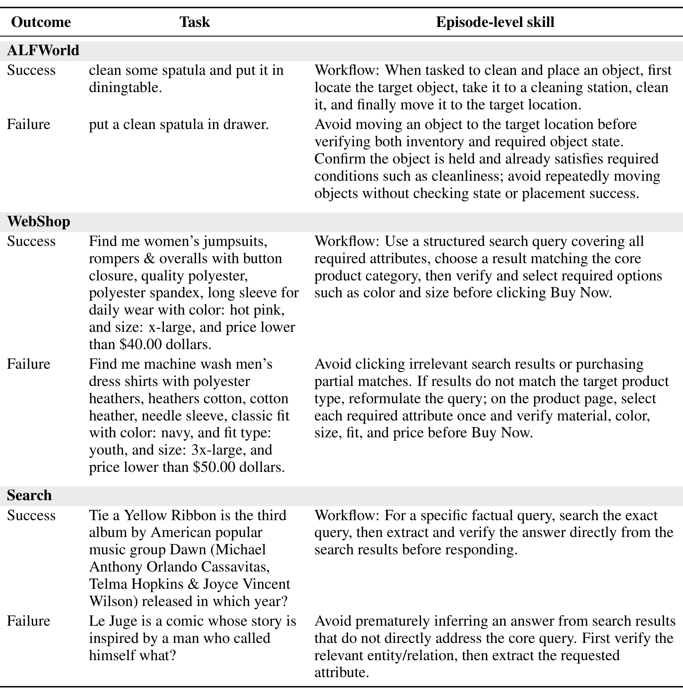
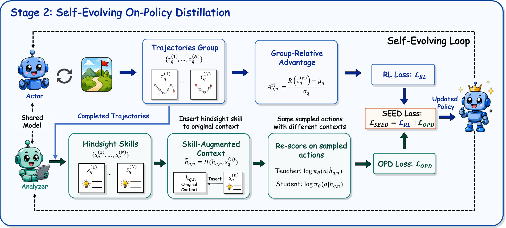
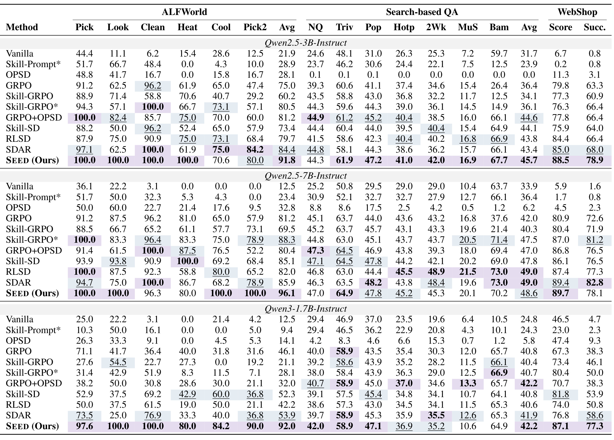
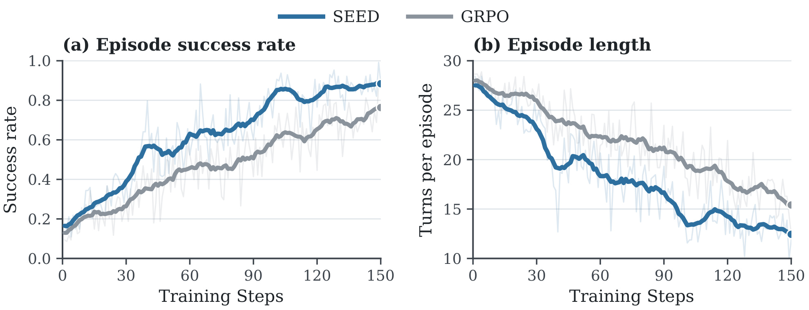
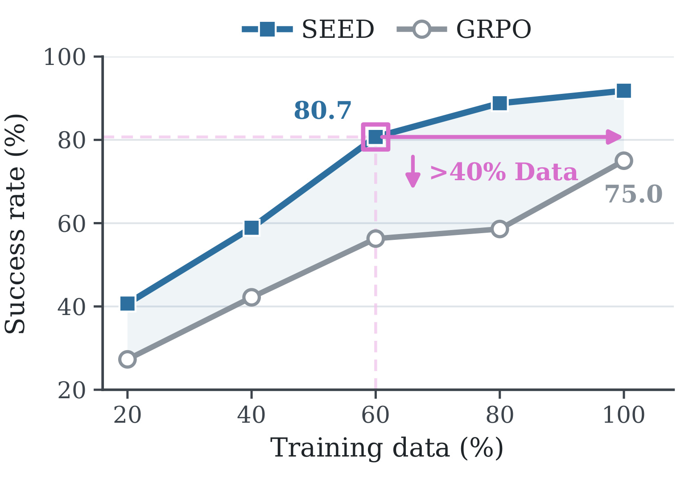
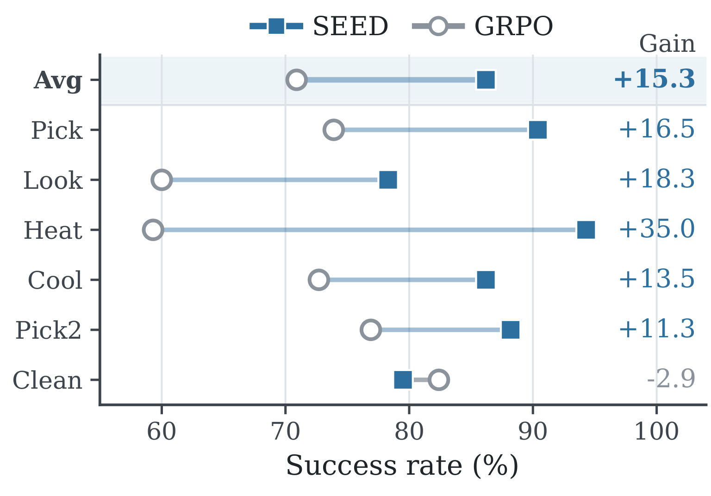
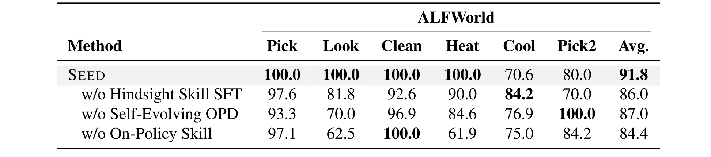
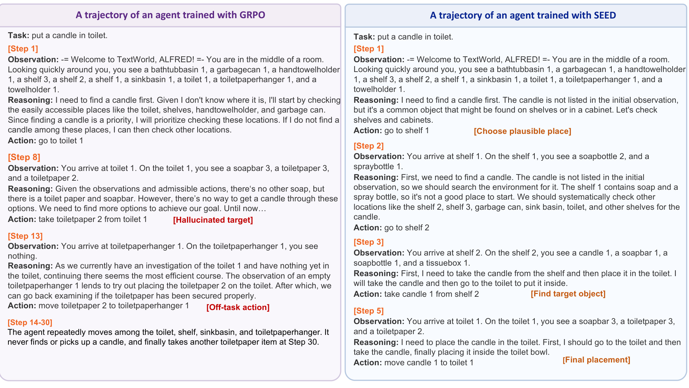
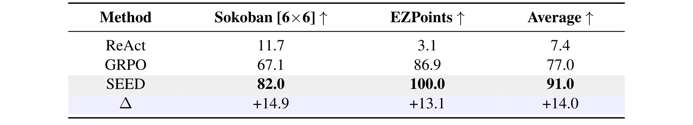
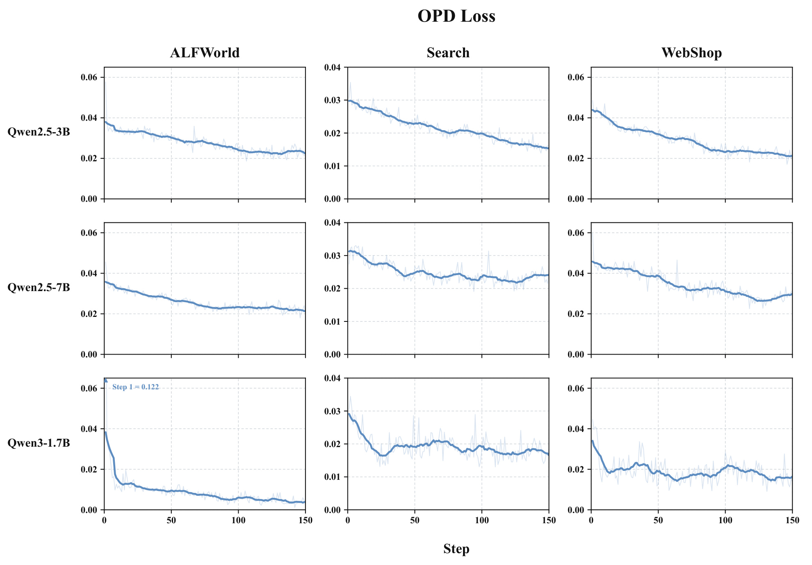

SEED：面向 Agent 强化学习的自演化在策略蒸馏
《SEED: Self-Evolving On-Policy Distillation for Agentic Reinforcement Learning》研究长程 Agent 强化学习中的细粒度信用分配。第一作者 Jinyang Wu 来自清华大学，合作机构包括浙江大学、香港中文大学、南洋理工大学与同济大学；论文于 2026 年 7 月 16 日提交至 arXiv。论文入口为 arXiv:2607.14777，公开代码仓库为 jinyangwu/SEED。它的核心不是在推理时给 Agent 多塞一段“经验提示”，而是把当前策略刚完成的轨迹变成训练期后见技能，再将技能对原行动概率的影响蒸馏回普通策略。
长程 Agent 的终局奖励只能说明整条轨迹是否成功，却无法指出中间哪次观察、行动或工具调用应被强化或纠正；固定教师和静态技能又会随策略演化而变旧，因此 episode 级结果与 token 级策略学习之间仍存在细粒度监督缺口。
1. 背景和问题
大模型从单轮回答走向 Agent 后，学习对象发生了根本变化。模型不再只生成一次文本，而要在环境中连续观察、推理、调用工具、执行动作，并根据反馈修正计划。一个 ALFWorld 任务可能要求先找到物体、满足清洁或加热等前置条件，再完成放置；WebShop 要把品类、材质、颜色、尺码和价格约束从搜索一路保持到购买；Search-based QA 则要判断证据是否充分、是否还需第二次检索。某一步走错，影响可能在十几轮后才暴露。把最终成功或失败作为唯一奖励虽然便宜、通用，却只给整条轨迹一个标量，无法回答“究竟是哪一个 token 或哪一次行动改变了结局”。
这种监督粒度错位有两个后果。第一，失败轨迹不一定处处错误：它可能已经完成了定位和取物，只因最后一次状态判断失误而失败；若把负 outcome 广播给所有 token，有用的局部行为也会被压低。第二，成功轨迹也不一定高效：Agent 可能经过大量无关探索后碰巧完成任务，而正奖励会把弯路和关键动作一并强化。GRPO 一类 outcome-only 方法能通过同任务多条轨迹的相对奖励降低方差，但一条轨迹内部仍共享同一个优势值，因此没有天然的局部信用分解。
后见信息提供了另一条路。轨迹结束后，完整历史会暴露哪些子目标已经完成、哪次观察是决定性的、失败源于什么，以及什么顺序可能复用。既有语言 Agent 常把这些信息保存为反思、记忆或经验摘要，在下一次推理时检索出来。问题在于，这些做法往往依赖静态经验库或额外 prompt：策略分布改变后，旧经验未必还对应当前模型的错误；部署时加入长 skill context 还会增加上下文和检索开销。一次性用外部教师蒸馏也有相同的陈旧风险——教师或 skill 数据被冻结后，无法跟随 actor 新遇到的状态与失败模式。
SEED 据此提出三个相互约束的要求。监督必须是 on-policy 的，来自当前策略真正访问的状态和采样的动作；必须是 dense 的，能够区分同一轨迹内不同 action token；还必须 self-evolving，让行为策略和轨迹分析能力一起更新。它保留 outcome RL 作为全局任务目标，同时增加一条训练期 privileged branch：当前策略读完自己的轨迹后生成自然语言 skill，再比较同一行动在普通历史和 skill 增强历史下的概率差。这里的关键转换是从“skill 说了什么”转向“skill 是否提高当前已采样 token 的支持度”，由此构造逐 token 的辅助权重。
把这三个条件放在一起，SEED 与常见 process reward model 也有区别。它不要求人为逐步标注每次工具调用是否正确，也不训练一个固定评分器给中间步骤打分；局部信号来自完整轨迹之后生成的自然语言规则，再通过同策略、同 token 的反事实上下文比较落到概率空间。这样做绕开了昂贵的 step annotation，并能利用成功与失败轨迹中的局部信息，但代价是监督质量取决于模型能否从结果中作出可靠分析。其研究问题因而不是“能否消除稀疏奖励”，而是“在保留终局奖励的前提下，能否构造与当前策略同步、足够密且部署时可移除的辅助监督”。
这项工作的价值也正在它的边界上。SEED 并没有证明概率差等于真实因果 credit，更没有引入独立的正确性 oracle。skill 与 actor 来自同一模型，分布同步减少了陈旧性，却可能同步保留盲点。因而这篇论文应被理解为一种训练信号构造方法：它把稀疏 outcome 和可解释的轨迹后见信息接起来，并用实验检验这种信号是否改善学习；至于信号是否始终语义正确，仍需外部验证。
2. 方法
2.1 Hindsight Skill SFT：从完整轨迹抽取后见技能
论文先把长程交互写成部分可观测决策过程。时刻 \(t\) 的普通历史包含从初始观测到当前观测的全部交错序列，策略只依赖这个历史产生下一行动；这一形式还明确了 skill 不属于部署时的观测，而是训练阶段额外构造的 privileged information：
符号解释：\(o_t\) 是环境观测，\(a_t\) 是文本响应或可执行动作，\(h_t\) 是普通交互历史，\(\pi_\theta\) 是参数为 \(\theta\) 的策略。完整轨迹记为 \(\tau=\{(o_t,a_t,r_t)\}_{t=0}^{T-1}\)，终局 outcome 为 \(R(\tau)\)。标准目标 \(J(\theta)=\mathbb E_{\tau\sim\pi_\theta}[R(\tau)]\) 只约束整条轨迹，这正是 SEED 要补足的粒度缺口。
第一阶段不直接进入 RL，而是先教会同一个自回归模型“读轨迹、写技能”。base policy 在每个任务上以普通上下文采样多条轨迹，序列化任务描述、观测、动作、奖励和最终成败。外部 analyzer 读取完整记录：对成功轨迹提取可复用 workflow，对失败轨迹提取 correction 或 avoidance rule；格式有效的 \((x_\tau,s_\tau)\) 组成 \(D_{\mathrm{sft}}\)。优化目标是标准 skill token 负对数似然：
符号解释：\(x_\tau\) 是序列化轨迹输入，\(s_\tau\) 是后见技能，\(s_{\tau,\ell}\) 是第 \(\ell\) 个 skill token。这个阶段的输出 \(\theta_{\mathrm{sft}}\) 不只是一个会行动的 checkpoint，还具备轨迹分析能力。论文用 GLM-5.2 离线生成初始标注，温度为 0，每个 benchmark 选 180 个任务、每任务 8 条 rollout，共 1,440 条候选轨迹，再做轻量格式校验。外部模型只服务初始化，后续 RL 的 analyzer 直接由当前策略实例化。

Table 4 让“skill”这个抽象名词落到可检查的文本上。ALFWorld 成功样例把“清洗并放置物体”压缩为定位、拿取、清洗、移动的顺序；失败样例不是简单写“任务失败”，而是要求移动前核对 inventory 与物体状态，避免在未确认清洁和持有状态时重复搬运。WebShop 的成功规则强调结构化查询、品类匹配和购买前逐项校验，失败规则则要求结果不匹配时重写查询；Search 的规则区分“证据足够即可回答”和“不能从不直接相关结果中提前推断”。这说明监督目标是 policy-facing 行为规则，而不是对终局 reward 的文字复述。不过样例也揭示风险：这些规则是否准确仍由 analyzer 自己判断，格式正确不等于语义正确。
2.2 On-Policy Hindsight Skill Generation：让技能随策略更新
第二阶段每次 policy update 开始时冻结当前 snapshot 为 \(\pi_{\theta_{\mathrm{old}}}\)。它先作为 actor 对同一任务 \(q\) 采样 \(N\) 条轨迹，又以 analyzer 角色读取每条完整轨迹并产生 skill：
符号解释：\(G_q\) 是同一任务的 rollout group，实验中 \(N=8\)；\(A_{\theta_{\mathrm{old}}}\) 表示共享参数模型的 analyzer 角色。actor 与 analyzer 不是两个独立训练的网络，而是同一 snapshot 在不同 prompt 下承担两种角色。一次更新后，新策略成为下一轮的 \(\theta_{\mathrm{old}}\)，因此访问到的轨迹分布和对轨迹的分析能力一起变化。
这一同步有明确作用：若策略已经学会避开某类早期错误，继续从静态库抽同类 skill，辅助信号会逐渐浪费；若策略进入新状态空间，旧 analyzer 也可能看不懂新的失败。SEED 每轮重新生成 trajectory-skill 对，把经验陈旧和监督陈旧都压回当前 checkpoint 附近。但“同步”只解决时效与分布问题，不自动提升分析正确率。共享模型可能在行动和反思中犯相同错误，甚至把高频偏差总结成貌似稳定的规则。
2.3 Paired Contextual Re-scoring：相同行动的双上下文打分
得到 skill 后，SEED 不让 teacher 重新生成一条更好的轨迹，而是固定原 on-policy action，在两种上下文下对同一批 token 重打分。这一控制变量很重要：若 action 也改变，就无法区分概率变化来自 token 本身还是上下文。确定性函数 \(H\) 把轨迹级 skill 插入原历史：
符号解释：\(h_{q,n,t}\) 是 ordinary context，\(\tilde h_{q,n,t}\) 是 skill-augmented context，二者对应完全相同的已采样 action。当前可训练策略 \(\pi_\theta\) 计算两种 log-probability：
符号解释：skill 分支是 privileged teacher context，ordinary 分支是实际部署会看到的 student context。两支共享当前 \(\pi_\theta\)，并非“大教师教小学生”；冻结的 \(\pi_{\theta_{\mathrm{old}}}\) 负责采样、skill 生成和 importance ratio，而双分支重打分使用当前可训练策略。teacher 输出 detach，梯度只流过 ordinary branch。SEED 随后把 skill 引起的 log-probability shift 变成置信 gate：
符号解释：\(\operatorname{sg}\) 表示 stop-gradient，\(\sigma\) 是 sigmoid，\(\beta_{\mathrm{opd}}\) 控制门的锐度。若加入 hindsight skill 后某个已采样 token 的概率上升，\(\Delta>0\)，该 token 获得更大辅助权重；概率下降则被减弱。于是一个 episode 的 skill 被投影成随 timestep 和 token 变化的 dense signal，而不是整条轨迹共享一个权重。对应的 OPD 目标为：
符号解释：\(m\) 是有效 action token mask，期望按有效 token 的 masked mean 计算。这个归一化避免长 action 仅因 token 更多而获得更大总权重。由于 gate 与 teacher log-probability 都被 detach，它的梯度可以写成：
符号解释：这个式子表明 OPD 在梯度上等价于 gate 加权的 ordinary-branch NLL，优化会提高 student 对 skill 所支持 on-policy token 的概率。它能在失败轨迹中保留局部有用 token，也能在成功轨迹中区分 skill 支持度不同的动作。不过 \(g\ge0\) 只代表“技能上下文更支持这个 token”，并不证明该 token 对真实环境价值更高；若 skill 本身错误，dense 信号只会更细密地传播错误。
2.4 Joint Outcome RL and OPD：联合优化与部署
SEED 没有用 OPD 替代环境 reward。全局成败仍决定不同 trajectory 的强化方向，局部 gate 只补充普通策略应更相信哪些已采样 token。对同任务 rollout group，它计算 group-relative advantage 和新旧策略概率比：
符号解释：\(\mu_q,\sigma_q\) 是组内 outcome 均值与标准差，\(A^{\mathrm{rl}}_{q,n}\) 广播到轨迹中的有效 action token；\(\rho\) 用于 clipped GRPO，另有 KL 正则约束。RL 项告诉模型“哪条轨迹整体更好”，OPD 项则在相同轨迹内部给出 token 级支持度。

Figure 2 的 Stage 2 细节可从上、下两条路径阅读。上路由 actor 产生一组完成轨迹，经组内 outcome 计算 RL loss；下路把相同完成轨迹交给共享 analyzer 生成 hindsight skills，再把 skill 插入原历史，并对原 action 做 paired re-scoring，形成 OPD loss。两项损失在一次 update 中汇合，updated policy 又同时替换下一轮 actor 和 analyzer，虚线闭环因此代表“经验分布与监督生成器共同刷新”。图中特别重要的是 “same sampled actions with different contexts”：差异来自上下文，不是 teacher 另采一条离线答案，因而辅助目标仍锚定当前策略实际访问的数据。图示中的联合目标可写为：
符号解释：\(\mathcal L_{\mathrm{rl}}\) 优化环境终局结果，\(\mathcal L_{\mathrm{opd}}\) 内化 skill 的局部行为效应，实验中 \(\lambda_{\mathrm{opd}}=0.01\)。一次 update 完成后，新 \(\theta\) 成为下一轮 snapshot。训练需要 rollout、轨迹分析和两种上下文重打分；推理时则退化为 \(a_t\sim\pi_\theta(\cdot\mid h_t)\)，不需要 analyzer、skill bank、retrieval 或额外 skill prompt。SEED 的关键贡献正是把训练期 privileged hindsight 压进普通上下文策略，同时保留 outcome RL 对真实任务成败的锚定。
3. 实验结果
3.1 设置、指标与可比基线
实验覆盖三种长程交互。ALFWorld 是文本化具身家庭任务，主结果用 140 个 seen 测试任务，另以 134 个 unseen 任务检查六类任务迁移；WebShop 有 128 个测试请求，同时报告约束满足程度 Score 和完全成功率 Succ.；Search-based QA 汇集 NQ、TriviaQA、PopQA、HotpotQA、2WikiMultiHopQA、MuSiQue 与 Bamboogle 共 51,713 个问题，各子集 accuracy 等权平均。RL 训练实例分别为 2,400、2,400 和 19,200。
backbone 包括 Qwen2.5-3B-Instruct、Qwen2.5-7B-Instruct 与 Qwen3-1.7B-Instruct。比较组不仅有 Vanilla 与 GRPO，还包括 Skill-Prompt、Skill-GRPO、OPSD、GRPO+OPSD、Skill-SD、RLSD、SDAR。表中星号表示验证或测试时仍提供 skill；SEED 没有星号，因此结果来自已经内化的普通策略。所有重现的 post-training baseline 尽量匹配 rollout budget、group size 和训练 schedule。SEED 训练 150 次 update，\(N=8\)，\(\beta_{\mathrm{opd}}=5\)，batch size 在 ALFWorld/WebShop 为 16、Search 为 128，计算使用 8 张 Nvidia A800 80G。
3.2 ALFWorld、Search-based QA 与 WebShop 主结果

Table 1 最值得先看 Qwen2.5-3B：SEED 的 ALFWorld 宏平均为 91.8，Search-based QA 平均为 45.7，WebShop 完全成功率为 78.9；对应 GRPO 为 75.0、36.4、63.3，即分别提升 16.8、9.3、15.6 个百分点。ALFWorld 六类中 Pick、Look、Clean、Heat 均为 100.0，WebShop Score 为 88.5。与推理期带 skill 的 Skill-GRPO* 相比，SEED 在这三个 aggregate 上也更高，说明收益不只是测试时看到额外提示。OPSD 单独训练在三个域明显崩坏，而 GRPO+OPSD 恢复并提升，支持 outcome 锚点的重要性。
跨 backbone 结果更适合审慎阅读。Qwen2.5-7B 上 SEED 的 ALFWorld 96.1 最高，但 Search 平均 48.6 略低于 RLSD/SDAR 的 49.0，WebShop Succ. 78.1 也低于 SDAR 的 82.8；这说明 SEED 并非每一规模、每一指标都占优。Qwen3-1.7B 上它把 ALFWorld 从 GRPO 的 46.1 提到 92.0，WebShop Succ. 从 38.3 提到 77.3，Search 平均 42.2 与 GRPO+OPSD 持平。整体证据支持“在多模型与多域上通常更强”，但不支持“所有 aggregate 必然最好”。论文报告相对 GRPO 的 ALFWorld 增益范围为 14.9—45.9 点，说明收益会随 backbone 和任务显著变化。
3.3 训练动态与样本效率

Figure 3 把最终结果拆回训练过程。约在 step 40，SEED 成功率已接近 57%，GRPO 约为 35%；之后差距持续存在，末期两者约为 0.88 与 0.76。右图同时显示平均 episode length：SEED 从约 28 轮更快降到约 13 轮，GRPO 末期约 16 轮。若只看轨迹变短，可能担心模型更早放弃；但这里短轨迹与更高成功率同时出现，较合理的解释是减少了无效探索和重复动作。曲线仍有明显噪声，作者用 13 点 centered moving average 展示趋势，因此具体 step 的读数应视为近似。两条曲线在训练后段仍有起伏，图中没有置信区间，不能据此判断单次 update 的显著性，也不能从平滑线反推随机种子方差。

Figure 4 显示 ALFWorld 各数据比例上 SEED 都高于 GRPO。最醒目的比较是：只用 60% 训练实例时，SEED 达到 80.7，已经超过 GRPO 使用 100% 数据的 75.0；40% 数据时 SEED 58.9，也接近 GRPO 用 80% 数据得到的 58.6。附录 Table 6 进一步报告 WebShop 上各比例绝对增益为 5.5—15.6 点。这个证据与方法动机一致：一个完成轨迹除终局 outcome 外又贡献 token 级 hindsight 信号，单位轨迹的信息利用率更高。不过数据比例减少不等于真实在线交互成本同比减少，轨迹分析与双上下文重打分的算力开销仍需计入；等 wall-clock 或等 FLOPs 条件下是否仍更省，原文没有给出。
3.4 泛化、消融与行为证据

在 Qwen2.5-3B 的 ALFWorld Unseen split 上，SEED 把宏平均从 GRPO 的 70.9 提到 86.2，增益 15.3 点；Heat、Look、Pick 分别提高 35.0、18.3、16.5 点，Cool 和 Pick2 也提高 13.5、11.3 点。这组结果说明训练所得规则能迁移到未见环境，而不只是记住 seen trajectory。图中也保留了重要反例：Clean 下降 2.9 点。因而更准确的结论是“五个任务族表现出可复用迁移，整体平均显著上升”，而不是所有技能都能无损泛化。该实验只使用 3B checkpoint，也未把 unseen 换成新的环境机制，所以外推范围仍是同一 benchmark 家族内部，结论不覆盖新的动作空间。

Table 2 将完整模型 91.8 作为参照：移除 Hindsight Skill SFT 后为 86.0，说明初始轨迹分析能力有 5.8 点贡献；移除持续 Self-Evolving OPD 后为 87.0，说明只做一次 SFT 不足；把当前 on-policy skills 换成静态离线 skill 库后降到 84.4，损失最大，为 7.4 点。三项消融分别对应“会不会分析”“是否持续蒸馏”“skill 是否来自当前策略”。但它们不是严格正交因素，删除 SFT 也会改变后续 analyzer 质量，因此不能把三个降幅简单相加成总贡献。表中 Cool、Pick2 等单类指标还会出现反向变化，宏平均更适合看总体贡献而非逐列单调性；消融结论也只在 ALFWorld 上直接成立。

Figure 6 展示“把 candle 放进 toilet”的同一任务。GRPO 一开始先去目标容器而不是寻找 candle，随后拿起 toilet paper，执行与任务无关的移动，并在 step 14—30 之间反复游走，最终未找到目标。SEED 则先按 plausible location 搜索 shelf 1、shelf 2，在第三步找到 candle，第五步完成放置。这个案例与 Figure 3 的短轨迹、高成功率相互印证：hindsight skill 可能帮助策略学会先满足前置条件、保持目标对象身份并减少循环。不过单个成功案例不能说明普遍因果机制，它只能提供“数值提升可能对应何种行为变化”的可读样本；真正的归因仍应依靠批量轨迹错误类型统计。
3.5 多模态扩展与优化稳定性

SEED 还在 Qwen2.5-VL-3B-Instruct 上测试 Sokoban 与 EZPoints。Sokoban 需要从 6×6 视觉网格跟踪箱子、墙和目标，错误推动可能不可逆；EZPoints 要识别纸牌并逐步构造等于 12 的表达式。Table 8 中 SEED 分别达到 82.0% 与 100.0%，相对 GRPO 的 67.1% 与 86.9% 提升 14.9、13.1 点，平均从 77.0% 到 91.0%。这说明 trajectory→skill→OPD 的接口可处理多模态上下文，但只有两个小型 benchmark，尚不能外推到开放视觉网页、机器人控制或高噪声现实环境。这里也没有展示视觉 skill 的错误类型，无法判断收益来自更好的视觉理解还是更稳的行动规划。

Figure 9 覆盖三种 backbone 与 ALFWorld、Search、WebShop 的九种组合，OPD loss 总体从初值下降并在较低水平稳定。Qwen2.5 两个规模多为渐进下降，Qwen3-1.7B 在 ALFWorld 上早期下降更陡；Search 和 WebShop 的曲线会出现平台与局部反弹。它至少说明 ordinary branch 正逐步拟合 skill branch 对已采样 token 的支持度，self-evolving loop 在这些设置中没有出现数值发散。但低 OPD loss 不是技能正确性的证据：共享 actor/analyzer 若对同类错误形成一致偏好，student 也能很好拟合一个错误而自洽的 teacher。
综合来看，实验链条比较完整：主结果覆盖文本具身、搜索与网页导航；训练曲线和样本比例补充优化效率；unseen split 与视觉任务考察外推；消融映射三项组件；定性轨迹解释行为差异。缺少的是独立 analyzer 正确率、skill 事实核验率、不同随机种子的方差/显著性，以及把额外训练 FLOPs 纳入后的等成本比较。当前结果来自论文报告与公开代码，本笔记未独立复现实验。
4. 总结
4.1 我的判断
SEED 的强点不是发明一种新的终局 reward，而是把已有 outcome RL 与后见语言监督放进同一条 on-policy 数据链。普通策略亲自采样轨迹，共享 analyzer 把完整历史转成 workflow 或 avoidance rule，skill 分支只在训练时提供 privileged context，最终以相同行动的概率差形成逐 token gate。这样既不丢掉环境 outcome 的全局锚点，又能在轨迹内部产生差异化学习强度，并在部署时恢复成无 skill、无检索的普通策略。对于长程工具调用、搜索和推荐系统中的多步决策，这种“训练时允许更丰富上下文，推理时内化并移除”的思路很有迁移价值。
其证据最有说服力的部分是三者相互一致：Table 1 的跨域提升、Table 2 中静态 skill 替换带来的最大降幅，以及 Figure 4 的样本效率共同支持 on-policy hindsight 的价值。泛化图中的 Clean -2.9 和 7B 上并非所有指标最好，则提醒我们不要把平均收益扩写成普遍支配。
4.2 局限、风险与后续跟进
至少有五项局限需要保留。第一，共享盲点会自我强化：actor 产生错误轨迹，analyzer 又可能把错误解释成规则，下一轮 OPD 将其参数化。第二，概率差是 context sensitivity，不是因果 credit；skill 支持某 token 不等于该 token 提高真实回报。第三，训练成本不低：前置外部标注、每轮轨迹分析、ordinary/augmented 双重打分以及 8×A800 都应进入等成本比较，论文的“无部署开销”不能替代训练成本说明。第四，当前任务大多是可控 benchmark，Search 最大交互步数只有 4，尚不能代表持续数小时、工具状态不稳定的生产 Agent。第五，泛化不均匀、随机方差和 skill 正确率未充分报告；ALFWorld Clean 回落已经说明某些规则可能产生负迁移。
后续最值得做四组实验。其一，为 skill 加入可验证状态变化、工具返回或规则检查，让 analyzer 同时输出置信度与证据，再比较是否降低错误自强化。其二，系统比较当前 analyzer、滞后若干 checkpoint 的 analyzer、固定外部强教师和多模型投票，直接测量 skill-induced probability shift 与真实 value improvement 的相关性。其三，做 selective analysis，只处理高不确定、novel state 或 reward 与 hindsight 不一致的轨迹，观察能否在保留收益的同时减少 paired scoring 成本。其四，把方法迁移到更长的生产型流程，并报告 wall-clock、token、显存、失败恢复和安全指标，而不只报告成功率。
最终，SEED 提供的是一个有吸引力但需要外部校准的自演化框架：它让策略从自己的新经验中持续抽取 dense 信号，却也因此把“谁来监督监督者”推到核心位置。复现时最应关注的不只是 91.8、45.7、78.9 三个结果，还要同时审计 skill 语义、gate 分布、错误闭环和等算力收益。